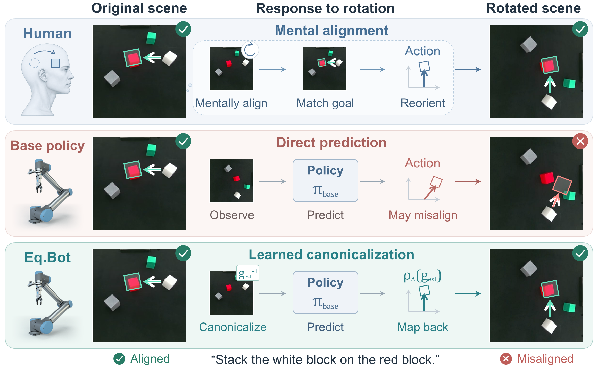
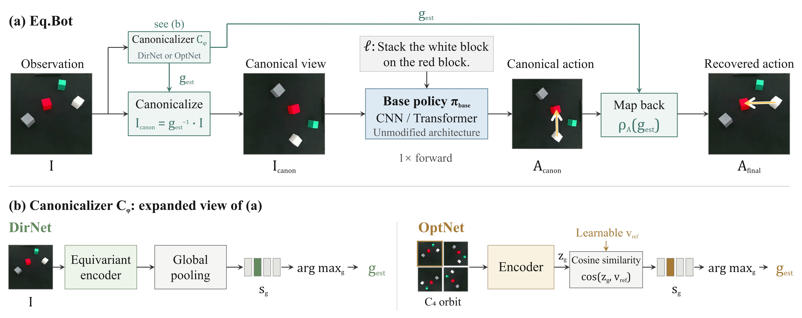
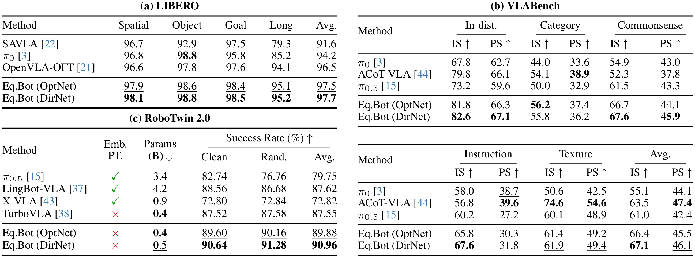
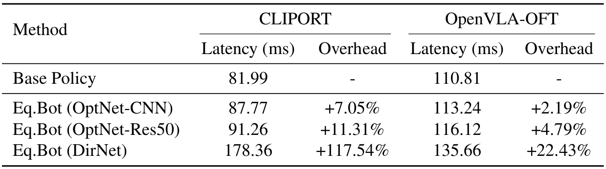

DirNet
Group-equivariant features give a score for each candidate orientation directly from the observation.
Robot learning · Geometric equivariance
1 Beijing Key Laboratory of Light Industrial Robot and Safety Verification, Capital Normal University 2 Department of Computer Science and Technology, Tsinghua University 3 School of Software, Beihang University † Correspondence: wangyd@cnu.edu.cn, zshao@cnu.edu.cn
Recognizing the target object does not ensure that a robot’s action rotates with the scene. Eq.Bot uses a learned canonical frame to align the observation, run the base policy once, and recover the predicted action in the original coordinates.
The recovery map respects the policy’s native output, from pixel affordances to Cartesian motions and joint targets. Both geometric operations sit outside the policy network. Experiments on four simulation benchmarks and three physical tasks show gains across CNN- and Transformer-based policies.

One learned frame connects the input and output transformations. The existing policy operates on a common view with its original language instruction.

Estimate a transform from the canonical frame to the original frame. Apply its inverse to the observation to obtain the canonical view.
Run the base policy once on the selected view. Its architecture, language instruction, and action representation remain unchanged.
Use the estimated frame to map pixel affordances, Cartesian actions, or joint targets back to the original coordinates.
Group-equivariant features give a score for each candidate orientation directly from the observation.
A conventional encoder scores transformed views by cosine similarity to a learned reference vector.
The canonicalizer learns jointly with the trainable policy components under task supervision. The main experiments use planar quarter turns (C4). With the instruction held fixed, the composite policy is equivariant when frame estimates transform consistently and the observation and action mappings are compatible on the valid domain.
We evaluate Eq.Bot on four simulation benchmarks with CNN- and Transformer-based policies, and measure inference latency on CLIPORT and OpenVLA-OFT. Select a figure to view it at full size.



Physical experiments
We evaluate Place Object, Pack Box, and Stack Blocks on a UR5e with a parallel gripper. Each policy runs 10 trials per task. Success requires completing the task without collisions with non-target objects; progress scores credit milestones achieved during execution.
| Metric | OpenVLA-OFT | OptNet-CNN | OptNet-Res50 | DirNet |
|---|---|---|---|---|
| Collision-free success | 63.3 | 73.3 | 76.7 | 83.3 |
| Progress score | 78.7 | 85.5 | 92.7 | 93.2 |

Browse all 120 recordings: three tasks, ten trials per task, and four policies. Choose a trial to compare the four policies side by side, including successful and unsuccessful runs. The selected videos start muted and loop when they come into view.

This page reflects the revised manuscript. The linked arXiv record is the 2025 preprint, cited below under its original title. Updated experiment code and data are being prepared for release.
@article{deng2025eqbot,
title = {Eq.Bot: Enhance Robotic Manipulation Learning via Group Equivariant Canonicalization},
author = {Deng, Jian and Wang, Yuandong and Zhu, Yangfu and Feng, Tao and Wo, Tianyu and Shao, Zhenzhou},
journal = {arXiv preprint arXiv:2511.15194},
year = {2025}
}